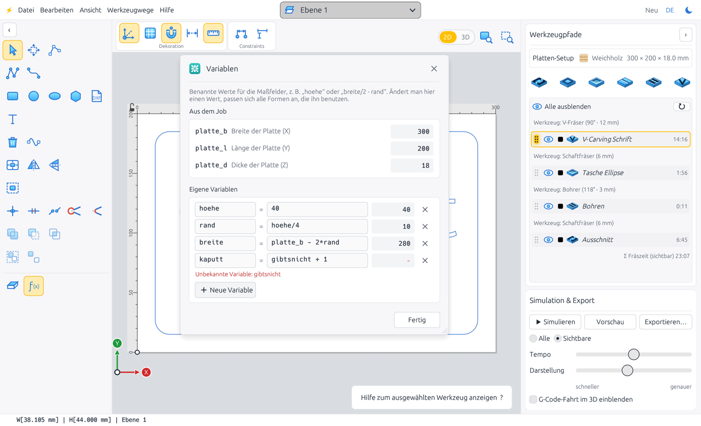
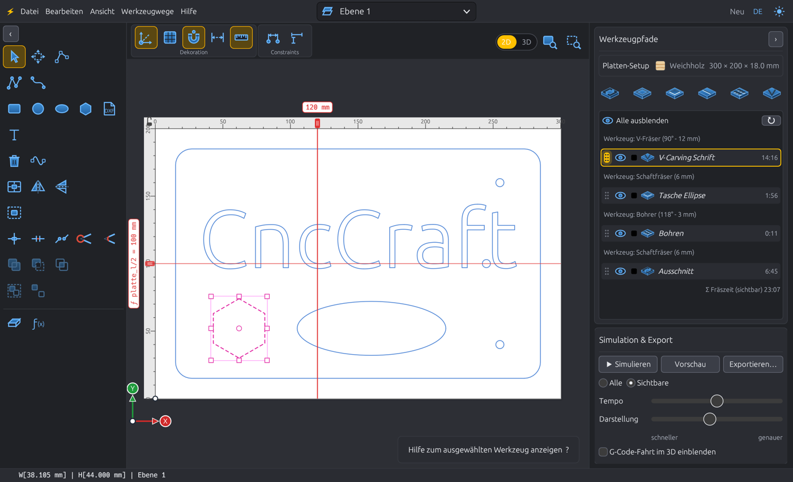

2D-Entwurf und Bearbeitung
Zeichnen Sie Linien, Rechtecke, Kreise, Ellipsen, Polygone und Text, passen Sie Knoten an und formen Sie Vektoren mit Versatz, Spiegeln und Booleschen Operationen um. Ebenen halten größere Zeichnungen übersichtlich.
CncCraft führt Sie vom Entwurf über die Werkzeugwege bis zur fertigen Datei für Ihre Fräse – übersichtlich, mit Vorschau in 2D und 3D und mit Maßen, die mitdenken.

Von der ersten Skizze bis zum Schnitt: alles in einem Programm.
Zeichnen Sie Linien, Rechtecke, Kreise, Ellipsen, Polygone und Text, passen Sie Knoten an und formen Sie Vektoren mit Versatz, Spiegeln und Booleschen Operationen um. Ebenen halten größere Zeichnungen übersichtlich.

Legen Sie benannte Werte an und rechnen Sie in jedem Maßfeld mit Formeln. Bemaßen Sie Abstände und legen Sie Linien waagrecht oder senkrecht fest – ändert sich ein Wert, folgt die Zeichnung.

Profil, Ausschnitt, Tasche, Bohren und V-Carving: Werkzeug wählen, Tiefen eintragen, berechnen. Haltestege halten ausgeschnittene Teile an ihrem Platz.

Spielen Sie die Werkzeugwege ab und sehen Sie am Werkstück, was die Fräse abtragen wird – bevor Material verloren geht. Der Ansichtswürfel und das Achsenkreuz des Nullpunkts helfen bei der Orientierung.

Das Programm folgt auf Wunsch dem Design Ihres Systems oder bleibt dauerhaft hell oder dunkel.

Ja, wenn Sie einen Mac (ab macOS 12, Apple Silicon oder Intel), einen Windows-PC oder einen Linux-Rechner haben. Fertige Pakete finden Sie unter Releases auf GitHub.
CncCraft schreibt Standard-G-Code in Millimetern oder Zoll sowie einen GRBL-Dialekt. Die meisten Steuerungen, die G-Code lesen, kommen damit zurecht. Prüfen Sie die erste Datei immer mit der Vorschau und einem Probeschnitt in Abfallmaterial.
Projekte werden als .cnccraft-Datei gespeichert (Textformat). Für die Fräse schreibt CncCraft G-Code mit den Endungen .nc, .tap oder .gcode.
In der Hilfe. Die Suche oben findet Seiten nach Stichwort, die Taste / springt direkt ins Suchfeld.
Jede Funktion ist beschrieben – mit Abbildungen aus dem Programm. Zur Onlinehilfe →